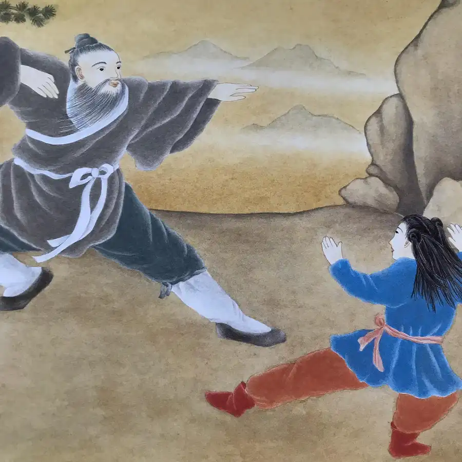
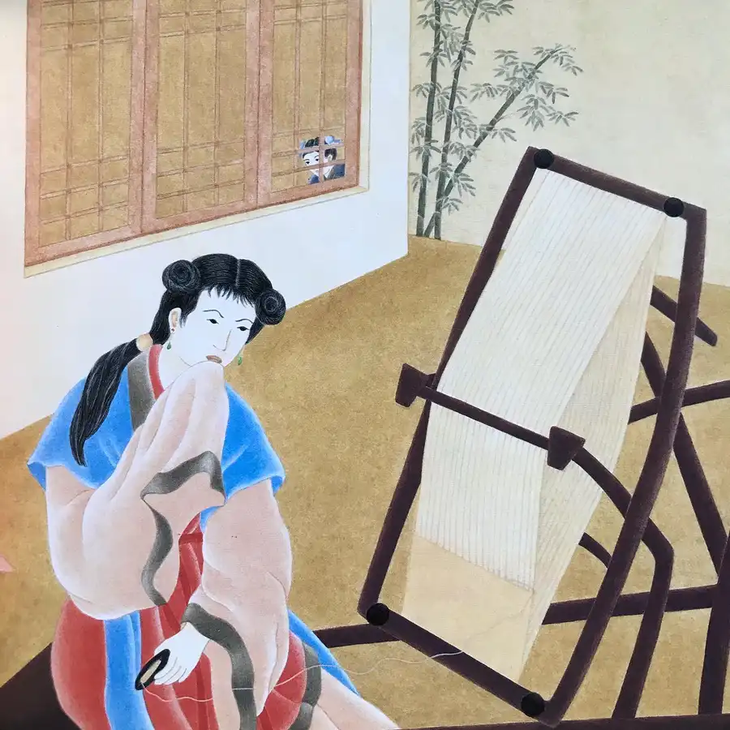
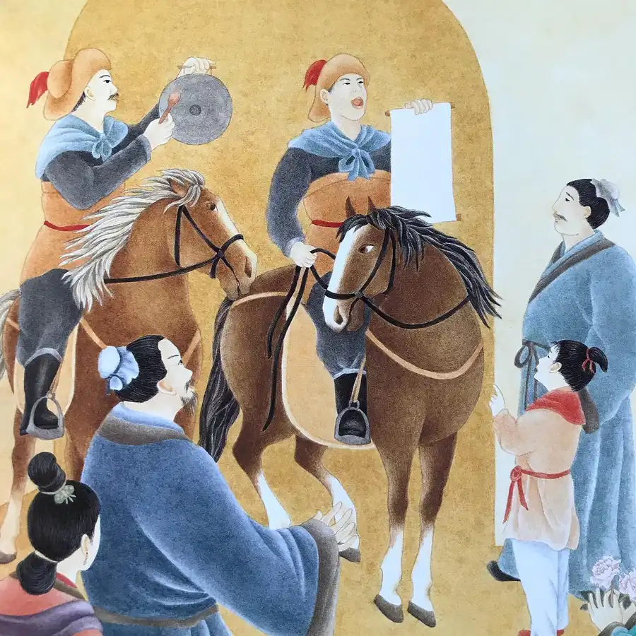
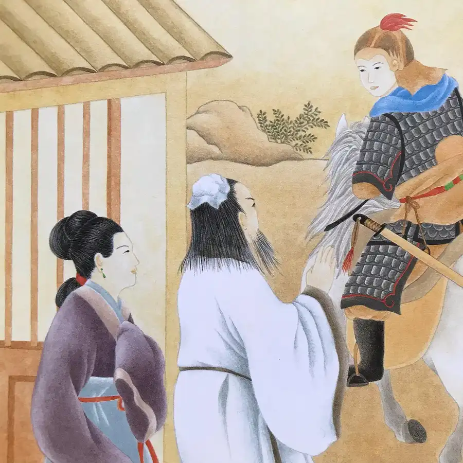
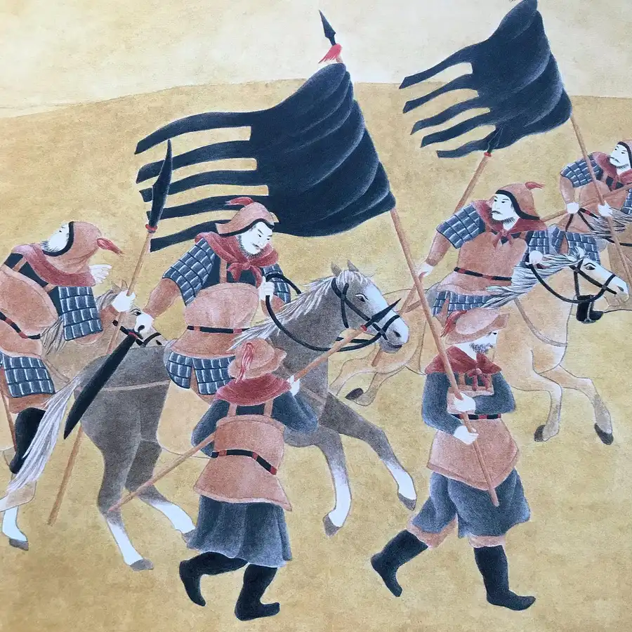
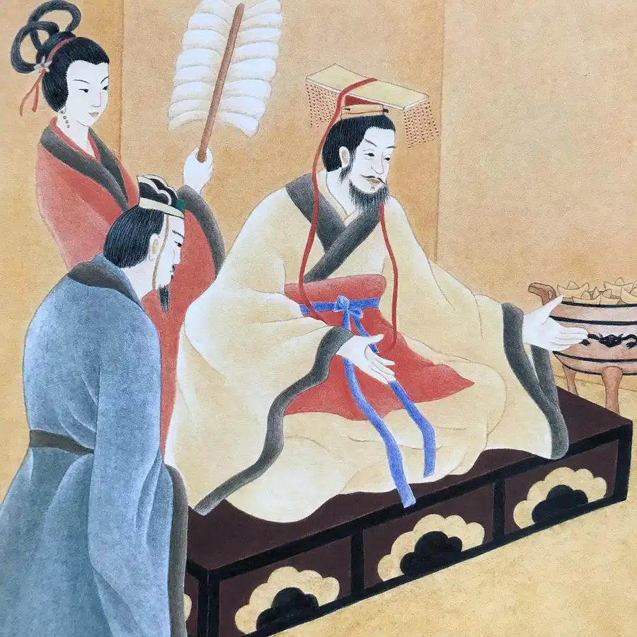
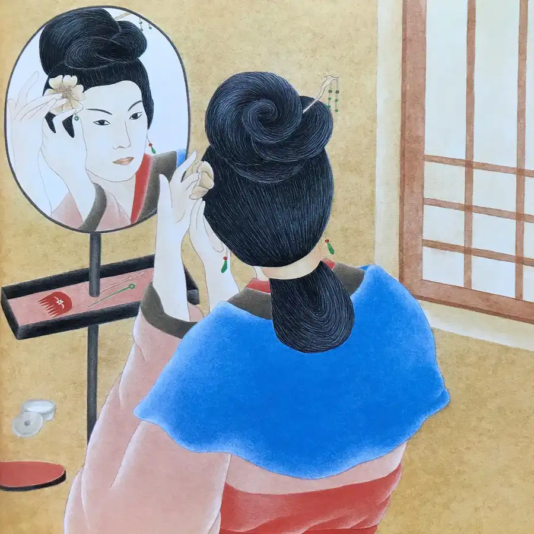
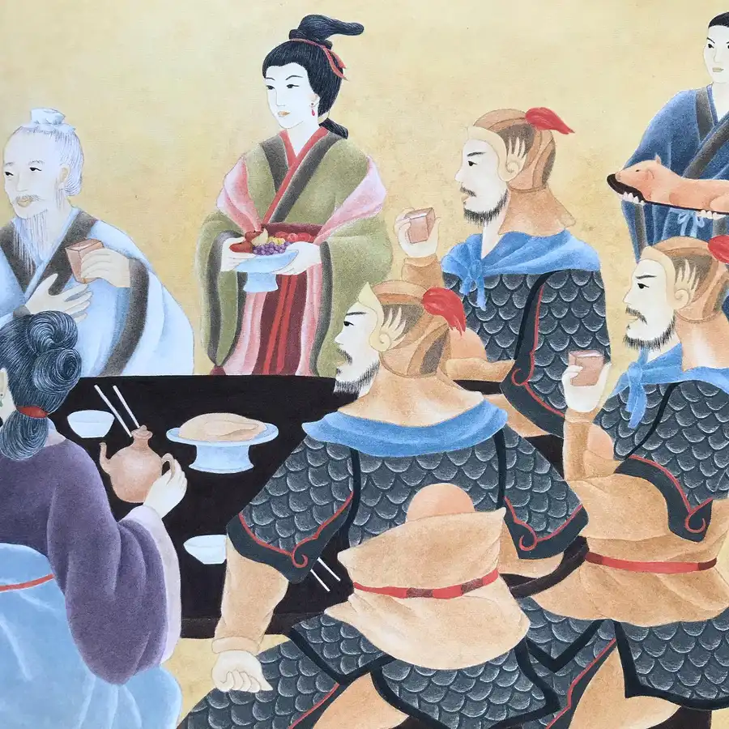
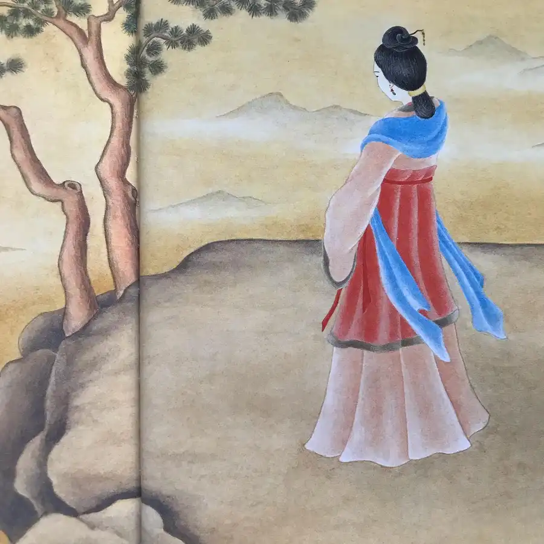

For a stirring adaptation of an ancient legend, you’ll want Jeanne M. Lee’s The Song of Mu Lan. A young woman receives word that her father is to be conscripted into the imperial army, and she bravely dons armor and poses as male to fight in his stead. After surviving many long years of hard service, she receives commendation from the emperor and returns to her family with honor. Lee’s text, translated from a folk poem originating in the period of the Northern and Southern Dynasties (between 420 and 589 of the Common Era), faithfully preserves the rhythm and imagery of the source material. Her illustrations pay homage to traditional Chinese art and include calligraphy by her father, Chan Bo Wan. #mulan #china #chinese #book #books #childrensbooks #beautifulbook #beautifulbooks #beautifulbookcover #beautifulbookcovers #picturebook #picturebooks #picturebookillustration #picturebookillustrations #picturebookart #classicchildrensbooks #childrensbookillustration #childrensliterature #illustration #kidlit #kidsbooks #bookworm #booklover #booklovers #bibliophile #bookstagram #bookstagrammer #bookstagrammers #instabook #instabooks









